← All interviews
National Status
and Passport with Daniel Mentz
| Queue title |
Commoner |
| Video |
YouTube:
v2N5ESMKI4g · 1 h 35 m 43 s · published 2026-01-21 by Commoner Law
Group |
| Presenter |
Daniel Mentz, Sacred Honor Educational Fellowship (National Status
& Passport Pathway) |
| Host |
Clint Griess, Commoner Law Group |
| Format |
About 49 min of slides (04:42 to 53:45), then about 41 min of
audience Q&A (54:21 to 1:35:43) |
| Queue row ID |
07213875-e6d8-4d00-b4ad-6c685bd2f24c |
| Collateral |
Full transcript · video metadata · slide index |
Reader's note. This is a summary of what Mentz
says and shows. His legal claims are reported as his claims,
not verified here. The closing "Claims worth checking" section lists
points a reader would want to check against primary sources before
relying on them. Neither the presenter nor the host is giving legal
advice, and the deck's own disclaimer says so (slide 2).
Each slide image is captioned with the time it first appears in the
video. Timestamps are mm:ss or h:mm:ss; the
YouTube link above can be opened at any of them by adding
&t=<seconds>.
1. Thesis in brief
Mentz argues that "citizen of the United States" is a 14th-Amendment,
federal-corporate status and that a different, older status exists
beside it: the pre-Civil War state citizen, which
federal statute calls a "national." He says the
statutes themselves let a person declare that status by sworn affidavit.
The affidavit goes to the U.S. Secretary of State and is then followed
by a passport application or renewal that attaches it. His claimed
result is that a person leaves the federal-citizen jurisdiction, with
practical consequences for income tax, traffic enforcement, jury duty
and similar matters. The unifying idea is dialectics:
the legal system uses double-meaning words ("United States," "State,"
"resident," "person") so that people consent to a status without knowing
they are choosing.
2.
Introduction and presenter background [00:00–04:42]
Host intro (00:00–02:25). Griess frames the evening
as a custom presentation for an audience that already knows the topic
area. It covers what changing status from "U.S. citizen" to "national"
means, a compare-and-contrast with other processes, material benefits,
"a spiritual benefit of just exiting the system," and Q&A.
Mentz's story (02:35–04:30).
- His "big awakening" came in 2020, when he asked how governments
could trample a "very clear constitution and bill
of rights" and face no repercussion for mask arrests and business
shutdowns.
- He came across a Roger Sayles interview, which "gave me a huge chunk
of the answer." That opened the "private remedy world" of equity, land
patents and trusts.
- The man who introduced him to Sayles, John Cacero, is on the call
and speaks at the end (section 8).
Slide 1 [04:46]: "National Status & Passport Pathway," Sacred
Honor Educational Fellowship.
3. Framing,
credentials and ground rules [04:42–12:27]
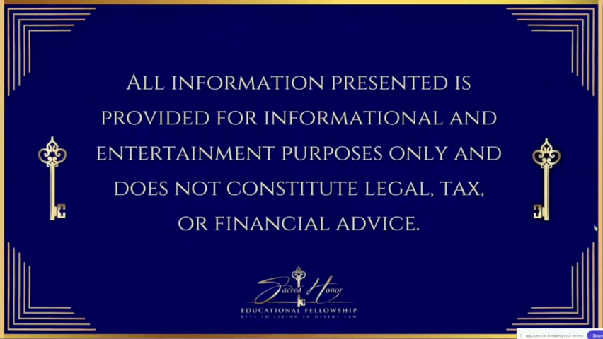
Slide
2 [05:40]: "All information presented is provided for informational and
entertainment purposes only and does not constitute legal, tax, or
financial advice."
- Sacred Honor offers four pathways. National status
is one, and the others are saved for the end (section 7).
- He calls this "the first and original" status-correction process,
"perfected since 2007" with "a total combined 90+ years of research,"
attributed to the life's work of three men, with many people carrying it
forward.
- He dislikes the term "status correction": it
implies something was incorrect, "when in fact it's flat out fraud and
deception and mind control." What changes is the individual's
relationship with the legal system.
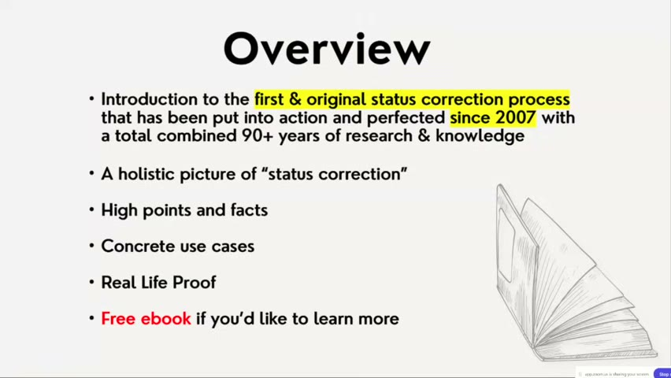
Slide 3
[05:48]: Overview: introduction to the "first & original" process, a
holistic picture, high points and facts, concrete cases, real-life
proof, free eBook.
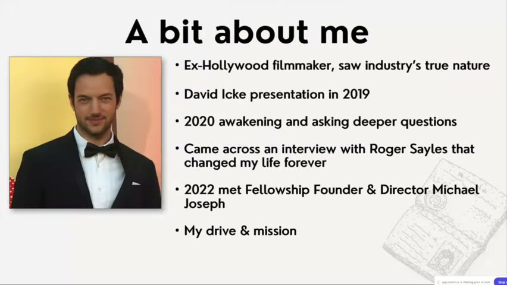
Slide 4 [08:00]: "A bit about me": ex-Hollywood filmmaker; David
Icke presentation in 2019; 2020 awakening; the Roger Sayles interview;
2022 meeting Fellowship founder and director Michael Joseph; his drive
and mission.
- Background: he left film after seeing what the industry really
wanted to produce. In 2019 he watched a David Icke presentation while
researching a dystopian screenplay.
- In 2022 he met Fellowship founder Michael Joseph. Joseph had heard
good things about the Sayles process but had never met anyone who had
practised it and could teach it, so they partnered.
- His stated mission is to be "a signal in the noise," cohesive and
clear about what status correction is and how it works.
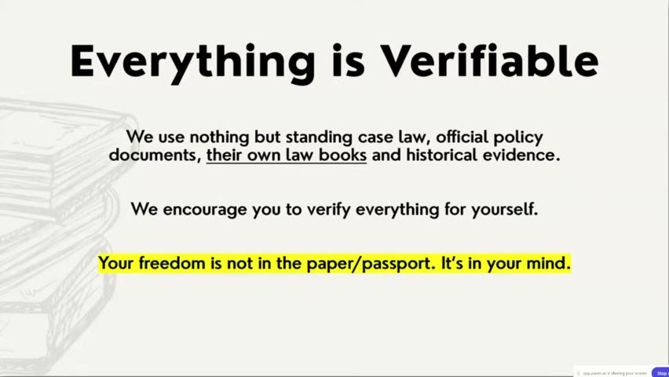
Slide 5 [10:53]: "Everything is
Verifiable": "standing case law, official policy documents, their own
law books and historical evidence." "Your freedom is not in the
paper/passport. It's in your mind."
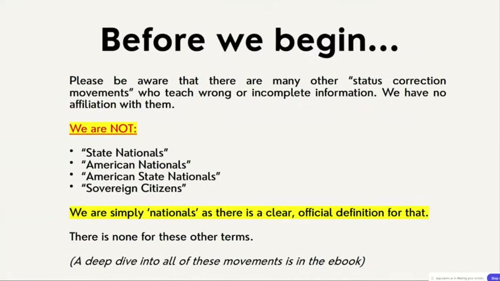
Slide 6 [11:49]: "We are NOT": "State Nationals," "American
Nationals," "American State Nationals," "Sovereign Citizens." "We are
simply 'nationals' as there is a clear, official definition for
that."
Mentz says he has no affiliation with other
status-correction movements and covers them in the eBook. He also says
"paper tigers," meaning the mail one receives, can be a programmed
fear.
4.
The case-law opening: "U.S. citizens are property; nationals/state
citizens are not" [12:27–16:00]
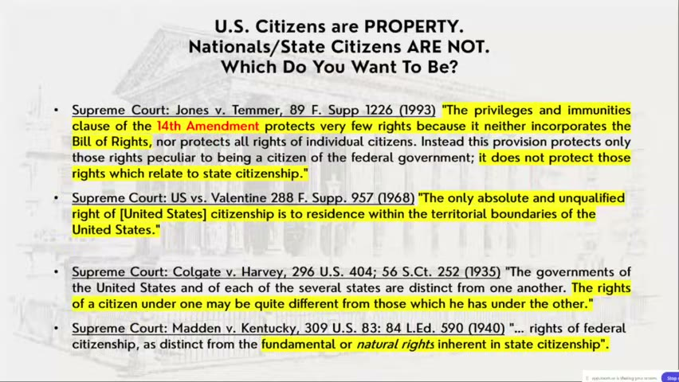
Slide 7 [12:27]: Four quotations
the audience is invited to read along with.
Mentz reads each quotation and draws a conclusion.
| Case (as shown on slide) |
Quoted proposition |
Mentz's takeaway |
| Jones
v. Temmer, 829 F. Supp. 1226 (D. Colo. 1993) (the slide prints
"89 F. Supp 1226," apparently a typo) |
The Privileges & Immunities Clause "protects only those rights
peculiar to being a citizen of the federal government; it does not
protect those rights which relate to state citizenship." |
Federal citizenship protects very little. |
| U.S. v. Valentine, 288 F. Supp. 957 (1968) |
"The only absolute and unqualified right of [United States]
citizenship is to residence within the territorial boundaries of the
United States." |
"The only rights U.S. citizens have is to reside." |
| Colgate v.
Harvey, 296 U.S.
404 (1935) |
The U.S. and each state governments are distinct; "the rights of a
citizen under one may be quite different from those which he has under
the other." |
Two statuses, two sets of rights. |
| Madden v. Kentucky, 309 U.S.
83 (1940) |
"…rights of federal citizenship, as distinct from the fundamental or
natural rights inherent in state citizenship." |
State citizens hold natural rights, "the highest law of the
universe." |
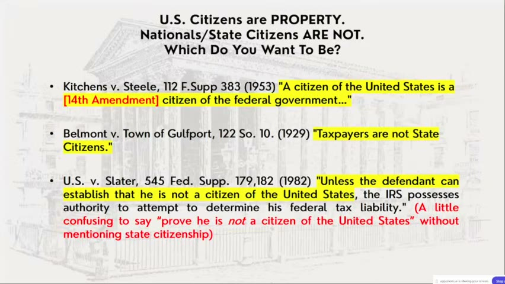
Slide 8 [15:12]: Kitchens v. Steele, 112 F. Supp. 383
(1953) ("a citizen of the United States is a [14th
Amendment] citizen of the federal government"); Belmont v. Town
of Gulfport, 122 So. 10 (1929) ("Taxpayers are not state
citizens"); U.S. v. Slater, 545 F. Supp. 179 (1982) (IRS has
authority to determine tax liability "unless the defendant can establish
that he is not a citizen of the United States"). The slide notes in red:
"a little confusing to say 'prove he is not a citizen of the
United States' without mentioning state citizenship."
Rhetorical question he poses: if the Supreme Court
has recognised state citizenship at least four times, "why have you
never heard about" it in school?
5.
Dialectics and the pre-Civil War republic [16:05–33:20]
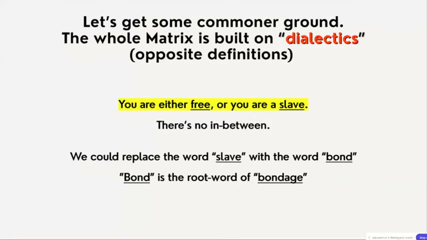
Slide 9 [16:05]: "The whole Matrix is built on 'dialectics'
(opposite definitions)": "You are either free, or you are a slave.
There's no in-between." "Slave" is swapped for "bond," root of
"bondage."
- Mentz says this is the one thing to take away: dialectics runs
the entire system.
- He moves from the equivocation fallacy to Black's Law Dictionary's
"dozens and dozens" of conflicting definitions of person.
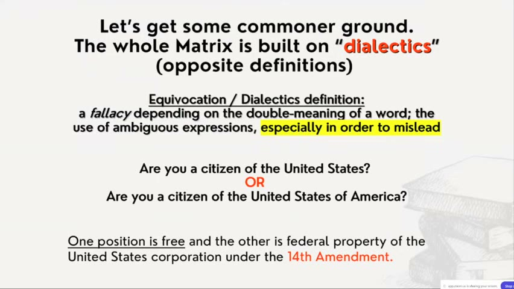
Slide 10 [18:18]: Equivocation: "a fallacy depending on the double
meaning of a word; the use of ambiguous expressions especially in order
to mislead." "Are you a citizen of the United States? OR Are you a
citizen of the United States of America?" "One position is free and the
other is federal property of the United States corporation under the 14th
Amendment."
Pre-Civil War America, as he describes it
[19:10–22:30]:
- Founded under common law ("no victim, no crime") and on individual
sovereignty as a creation of the Creator. The
Bill of Rights enumerated rights and did not grant
them.
- No personal income tax until 1913, apart from Civil War greenbacks
and Union Army taxation, and very little taxation overall. Yet there
were "cities, roads, infrastructure, public transport, utilities,"
funded by excise taxes and imports.
- No licences, permits or certificates to travel or work. Cash could
be redeemed in gold or silver at any bank.
- His rebuttal to "if you don't pay taxes, you shouldn't drive on the
roads": how was it all built before 1913?
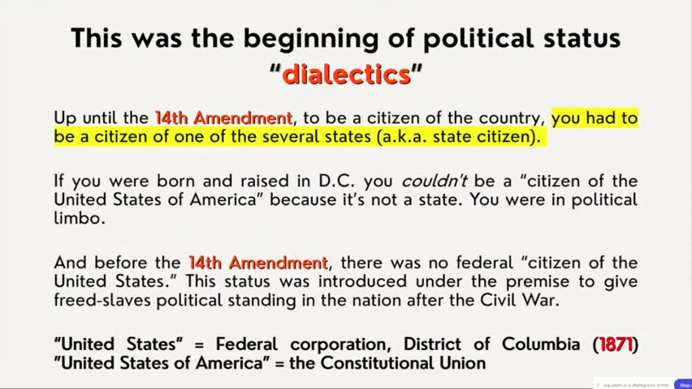
Slide 11 [22:30]: "This was the
beginning of political status 'dialectics'": before the 14th
Amendment one had to be a citizen of a state to be a citizen of the
country. Those born in D.C. before the Civil War "couldn't be a citizen
of the United States of America because it's not a state." Before the 14th
Amendment "there was no federal 'citizen of the United States,'" a
status "introduced under the premise to give freed slaves political
standing."
- Each state had its own birth and naturalisation process. You were a
citizen of Texas or Wyoming first, hence of the Union.
- The 14th
Amendment, he says, "was only designed to give freed slaves
political standing". He later adds, in Q&A, that its first sentence
was added "an hour before midnight" before ratification.
- Organic
Act of 1871. He says the District of Columbia was formed
into a corporation, "but they could only do that after the 14th
Amendment because that established corporate federal
citizenship."
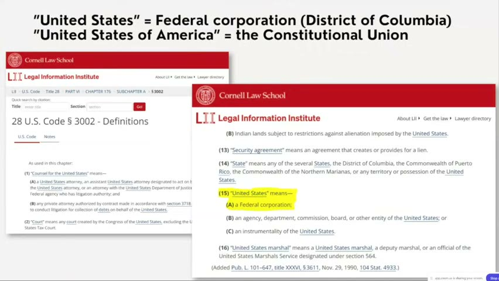
Slide 12 [25:16]:
"'United States' = Federal corporation (District of Columbia)"; "'United
States of America' = the Constitutional Union." Shows 28 U.S.C. §
3002 (Cornell LII).
Mentz points to 28 U.S.C. §
3002, subsection (15)(A): "United States" "means a federal
corporation." Points of emphasis:
- Quotation marks in a statutory definition mean "nothing can be added
or subtracted." You cannot add "of America" to the term.
- Therefore "citizen of the United States" is a corporate status.
"Whenever you see these words, think federal corporation."
6. The
"national" definition and the escape clause [26:25–33:20]
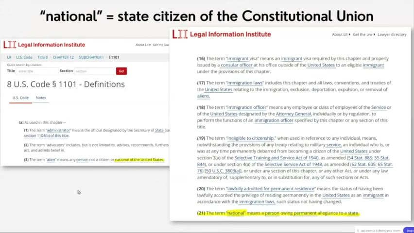
Slide 13 [26:25]: "'national' =
state citizen of the Constitutional Union," with 8 U.S.C. §
1101 on screen.
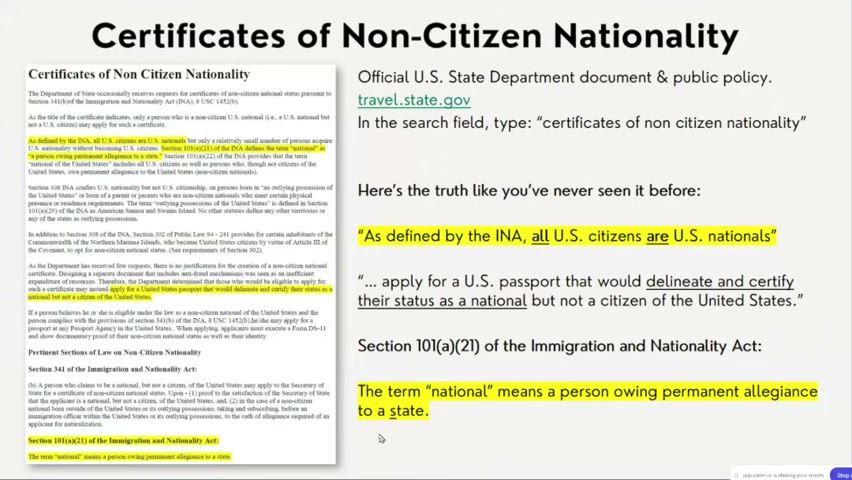
Slide 14
[26:59]: "Certificates of Non-Citizen Nationality." State Department
policy page (travel.state.gov): "As defined by the INA, all U.S.
citizens are U.S. nationals"; applicants may get a passport
that would "delineate and certify their status as a national but not a
citizen of the United States." INA §101(a)(21): "The term 'national'
means a person owing permanent allegiance to a state."
The argument, step by step:
- State Department policy says all U.S. citizens are U.S. nationals.
Mentz asks why no one has ever asked "are you a U.S. national?"
- The same page says one can apply for a passport certifying
national-but-not-citizen status. The page itself addresses American
Samoans and Swains Islanders, the only people the system labels
"non-citizen nationals."
- Mentz says the label "non-citizen national" does
not apply to ordinary Americans. Instead, "they hid the
pre-Civil War state citizen behind the American Samoan legislation"
under a new dialectic label, hoping Americans would never ask what
happened to the state citizen.
- The definition says "a state" in lowercase. INA
§101(a)(36) defines "State" with a capital S as including the District
of Columbia, Puerto Rico, Guam and the Virgin Islands. "Even the
capitalization of one single letter… can mean a whole world of
difference." So a national is "owing permanent allegiance" to a
small-s state, which is outside the capital-S "State" of D.C.
and its territories.
- Jurisdiction and feudalism. Jurisdiction "comes
from the ancient feudal system," and the formula is "allegiance for
protection, protection for allegiance." He calls today's system "a
modern version of a corporate feudal system" and cites the Pledge of
Allegiance.
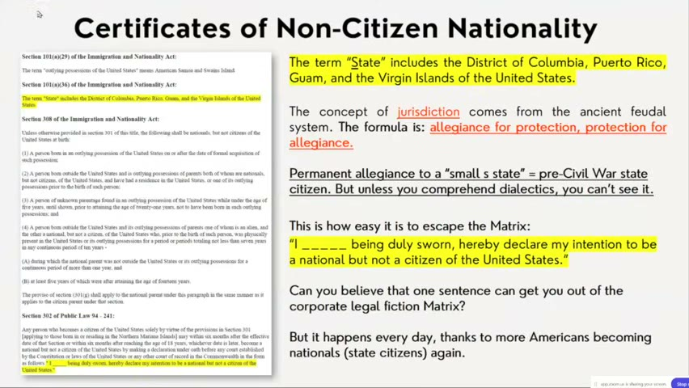
Slide 15 [29:55]: Adds the
"escape the Matrix" sentence from the policy page: "I, ____, being duly
sworn, hereby declare my intention to be a national but not a citizen of
the United States." "Can you believe that one sentence can get you out
of the corporate legal fiction Matrix? But it happens every day, thanks
to more Americans becoming nationals (state citizens) again."
- Put this sentence into an affidavit and send it to the U.S.
Secretary of State.
- Mentz says he has looked for holes "for all the years" and has found
none. His view is that "reanimating the old republic" will come "from
the bottom up."
7.
The 14th Amendment, "the two questions," and the dual system
[33:20–41:00]
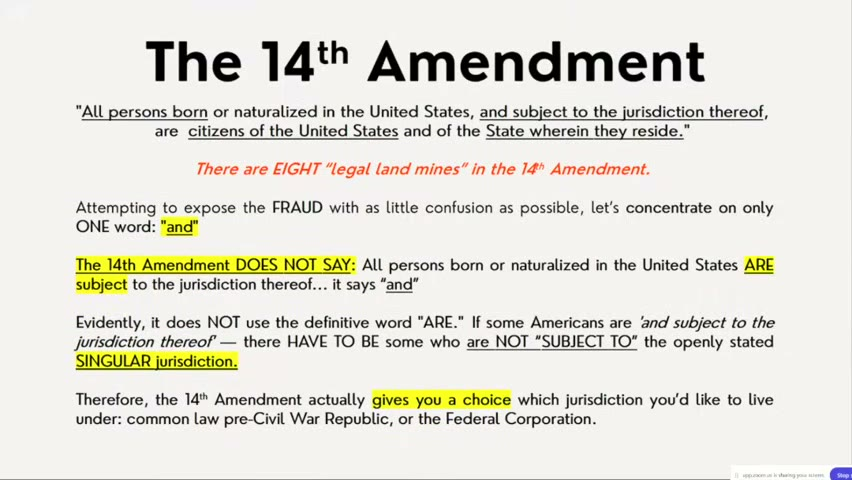
Slide 16 [33:23]: "The 14th
Amendment": "All persons born or naturalized in the United States,
and subject to the jurisdiction thereof, are citizens
of the United States and of the State wherein they
reside." Notes "eight legal landmines," focuses on the word "and," and
concludes "the 14th
Amendment actually gives you a choice which jurisdiction you'd like
to live under: common law pre-Civil War Republic, or the Federal
Corporation."
- The capital-S "State" in the amendment is "not a typo."
- His reading: the amendment does not say persons born or naturalised
here are subject to the jurisdiction. It says "and
subject." If some Americans are, others are not.
- In contrast, the 13th
Amendment refers to "their jurisdiction," a collective jurisdiction
of all the states. The 14th "all of a sudden… changes into a singular
centralized jurisdiction."
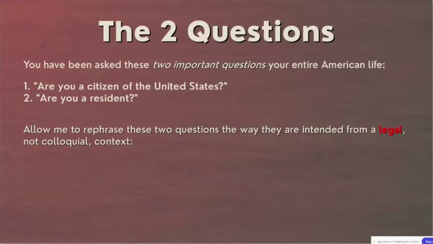
Slide 17 [35:32]: "The 2 Questions": 1) "Are you a citizen of the
United States?" 2) "Are you a resident?"
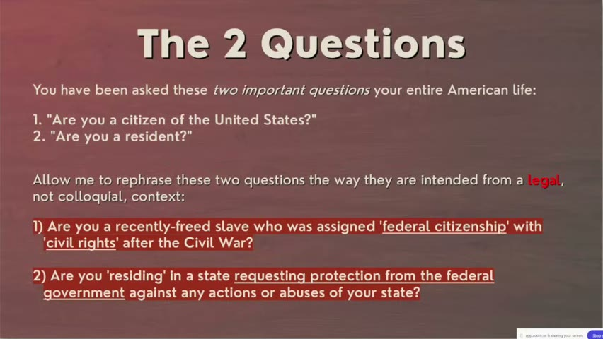
Slide
18 [36:15]: Legal-context rephrasing: (1) "Are you a recently freed
slave who was assigned 'federal citizenship' with 'civil rights' after
the Civil War?" (2) "Are you 'residing' in a state requesting protection
from the federal government against any actions or abuses of your
state?"
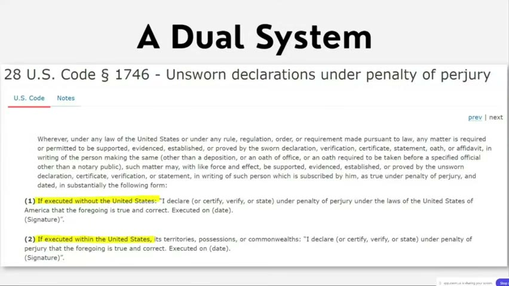
Slide 19 [36:40]: "A Dual
System": 28
U.S.C. § 1746, unsworn declarations under penalty of
perjury.
- § 1746
gives two declaration formulas: one for execution
outside "the United States" ("under the laws of the United
States of America") and one for execution within it ("its
territories, possessions, or commonwealths"), where "of America" is
omitted.
- Mentz's point: by default, anything signed under penalty of perjury
falls into the federal corporation form. He says his
students have written "United States of America" into contracts to
choose the jurisdiction. "It's your choice."
8. Title 26:
"non-resident alien" explained [41:00–44:10]
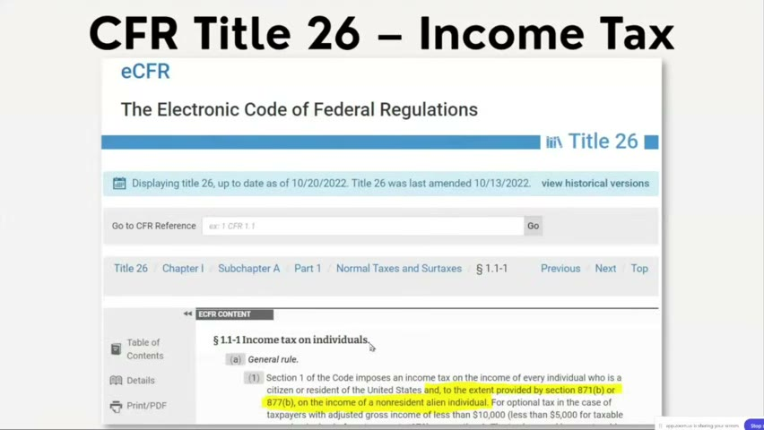
Slide 20 [38:38]: "CFR Title 26 – Income
Tax": §
1.1-1, income tax "on individuals… who is a citizen or resident of
the United States, to the extent provided by section
871(b) or 877(b), on
the income of a nonresident alien individual."
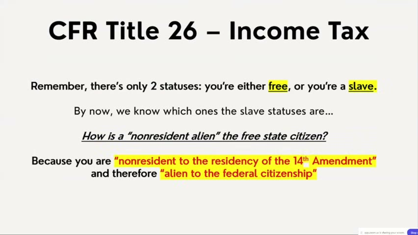
Slide 21 [41:08]: "How is a 'nonresident alien' the free state
citizen?" "Because you are 'nonresident' to the residency of the 14th
Amendment and therefore 'alien' to the federal
citizenship."
- Mentz says the Code imposes tax on citizens and residents "of the
United States," which lacks "of America" and so means the
corporation.
- §871(b) and
§877(b)
cover the only two constitutional taxes before the Civil War:
expatriation, and business within D.C. or proceeds from federally
incorporated bonds (his example: Pacific Railroad bonds).
- "Non-resident alien" is "just another dialectic label." A state
citizen is non-resident to the residency created by the 14th
Amendment and alien to federal citizenship. "When you're a national
you're no longer a resident, so whenever they ask you, just say
no."
9. Benefits and drawbacks
[42:02–44:05]
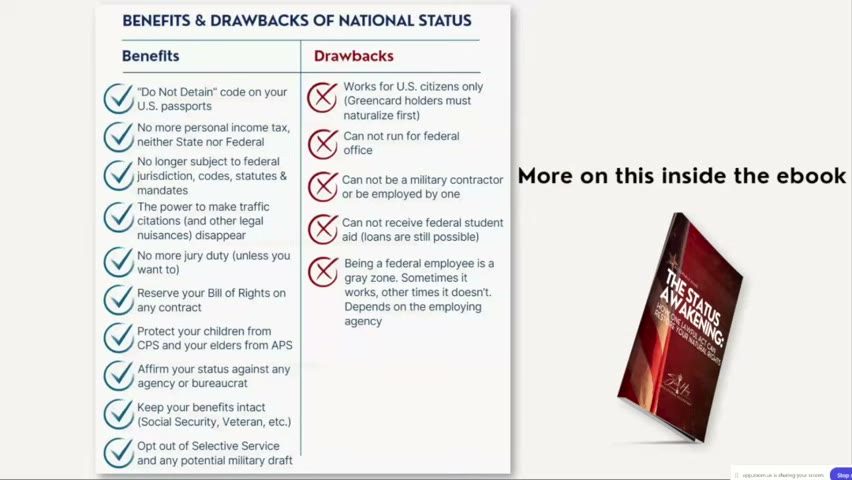
Slide 22 [42:02]: "Benefits &
Drawbacks of National Status."
Benefits as listed
- "Do Not Detain" code on U.S. passports. Evidence offered: a sheriff
on camera confirming it, and many member videos of police returning a
passport card and releasing the member.
- No personal income tax, state or federal.
- No longer subject to federal jurisdiction, codes, statutes and
mandates. The power to issue traffic citations, parking tickets and jury
summonses "disappears."
- Reserve Bill
of Rights on contracts; protect children from CPS and elders from
APS; affirm status against any agency.
- Keep benefits (Social Security, veterans). "They're
just a contract."
- Opt out of Selective Service and any potential draft.
Drawbacks as listed
- Works only for U.S. citizens. Green-card holders must naturalise
first.
- Cannot run for federal office.
- Cannot be, or be employed by, a military contractor.
- Cannot receive federal student aid. Student loans are still
possible.
- Federal employment is "a gray zone," depending on the agency.
10. "Real-life proof"
[44:11–52:00]
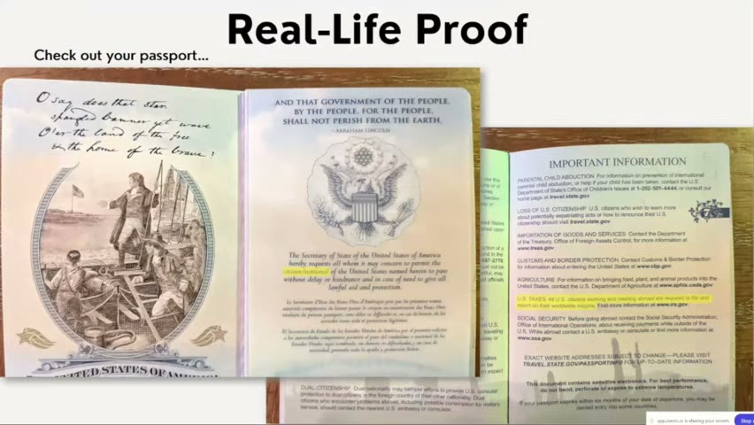
Slide 23 [44:11]: "Check out your passport…" the front matter of a
U.S. passport book.
- Page 1 reads "The Secretary of State… hereby requests all whom it
may concern to permit the citizen/national" to pass. It
doesn't say "state national" or "American national."
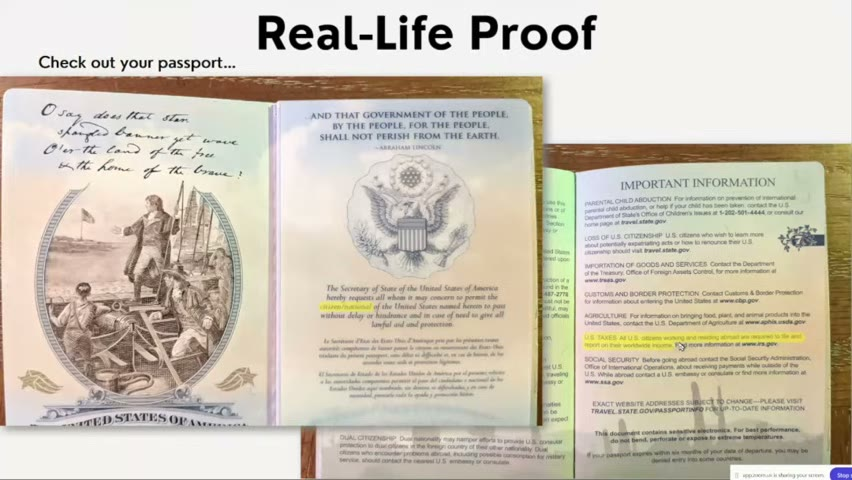
Slide 24 [45:14]: Passport "Important
Information" page.
- That page says U.S. taxes apply to "all U.S. citizens working and
residing abroad." Mentz notes it leaves out nationals, who "are not
residing and… not required to file."
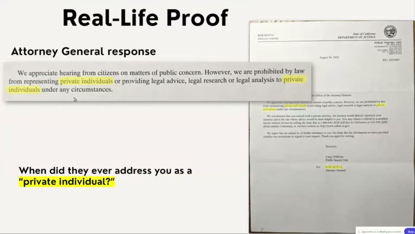
Slide 25 [45:25]: California
Attorney General reply: "We are prohibited by law from representing
private individuals or providing legal advice…" Mentz asks: "When did
they ever address you as a 'private individual'?"
- Mentz reads the response as an admission that the sender is now in
the "private" rather than the "corporate fictional" jurisdiction.
- He adds that after the 14th
Amendment, states had to adopt corporate versions of their
constitutions, so every capital-S State is a "sub-corporation" of the
D.C. corporation.
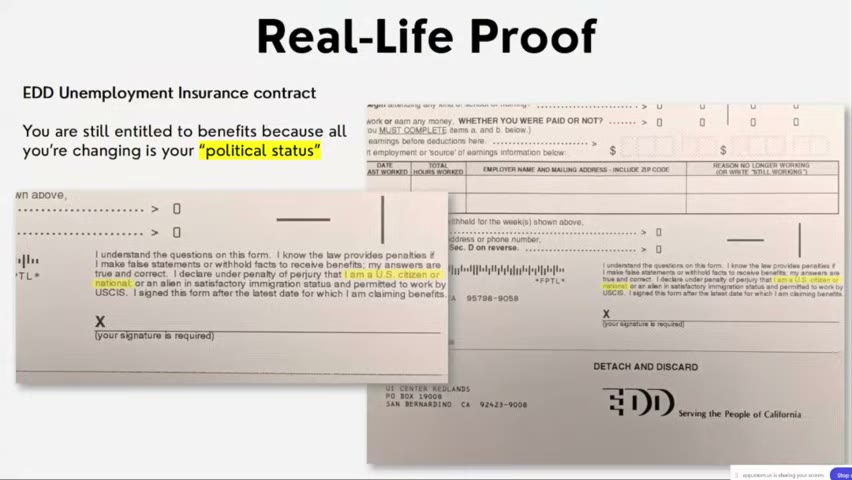
Slide 26 [48:11]: California EDD
unemployment-insurance contract: "I declare under penalty of perjury
that I am a U.S. citizen or national." "You are still entitled to
benefits because all you're changing is your 'political
status.'"
- A member applied and received unemployment. "Or" separates two
distinct, equally valid statuses.
- He says the old republic "still exists… they just layered over top
this federal corporation… it's a mirror."
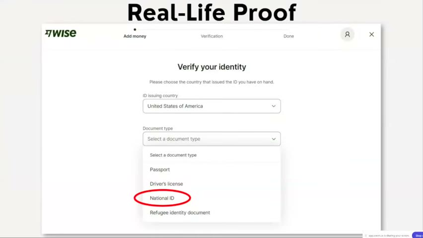
Slide 27 [49:47]: Wise KYC:
ID-issuing country "United States of America," document type "National
ID" (circled).
- Mentz selected "national ID," had it accepted, and treats this as a
corporate acknowledgement of a "national" status.
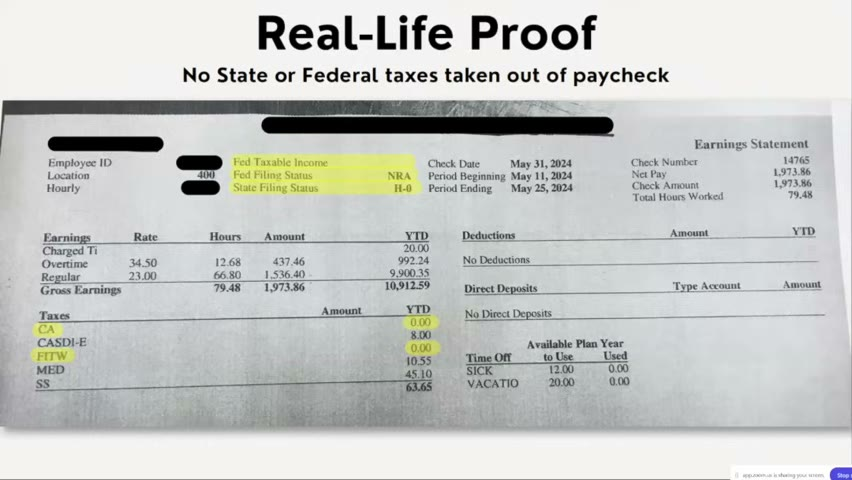
Slide
28 [50:51]: Redacted pay stub: "No State or Federal taxes taken out of
paycheck." Federal filing status "NRA," California tax $0, FITW (federal
income tax withheld) $0.
- The member chose to contribute to Medicare and Social Security.
Others opt out of those too.
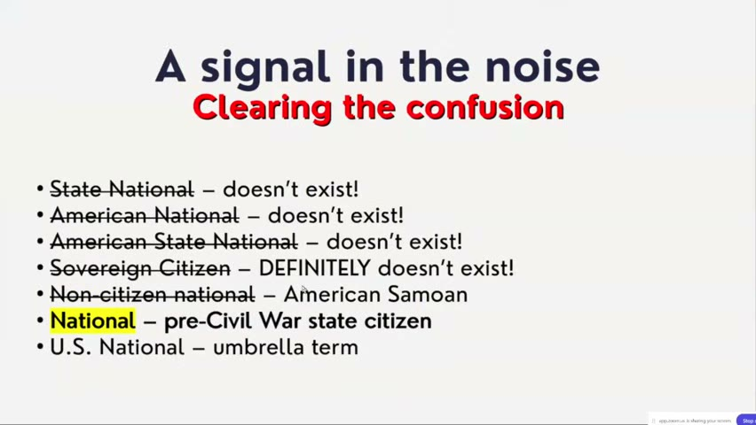
Slide 29 [51:40]: "A signal in the
noise. Clearing the confusion."
| Term |
Mentz's verdict |
| State National |
doesn't exist |
| American National |
doesn't exist |
| American State National |
doesn't exist |
| Sovereign Citizen |
"DEFINITELY doesn't exist" (a label "slapped on anyone trying to do
anything different") |
| Non-citizen national |
American Samoan only |
| National |
pre-Civil War state citizen |
| U.S. National |
umbrella term (can include U.S. citizens, non-citizen nationals and
nationals) |
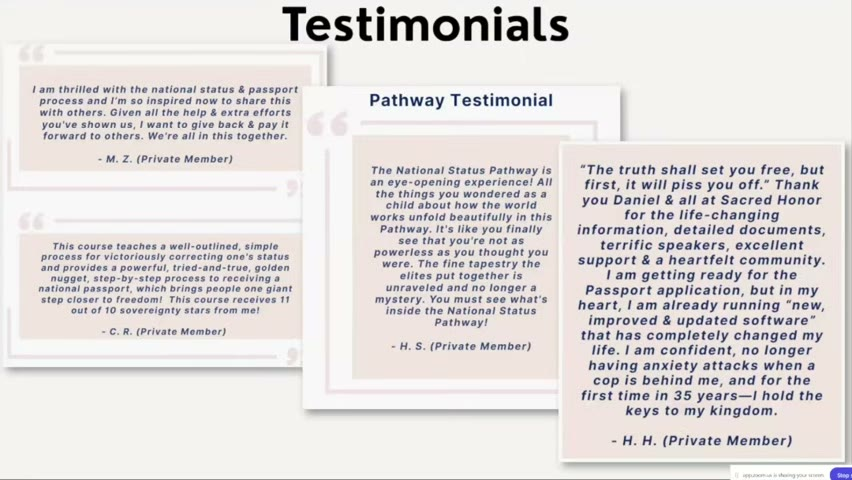
Slide 30 [52:57]: Member testimonials (first set).
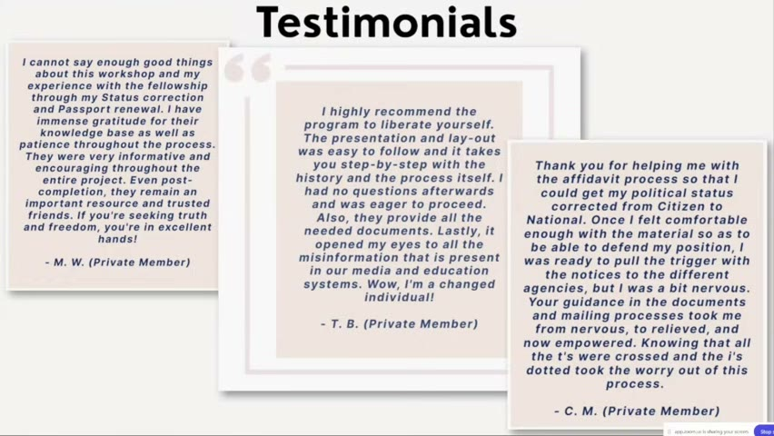
Slide 31 [53:15]: Member testimonials (second set).
Slide
32 [53:31]: "Grab Your Free eBook: The Status Awakening" (by
the publisher, Sacred Honor Educational Fellowship). Link in the
description / chat (commonerlaw.com/national-status-welcome).
11. Q&A [54:21–1:28:16]
Host Griess reads submitted questions. Where it helps, the entry
gives the questioner by first name only.
| Time |
Question |
Mentz's answer |
| 54:21 |
Reaction from host on "problem-reaction-solution"; did they plan the
Civil War? |
"International bankers" tried to subvert the republic through the
1800s by bribing officials and infiltrating legislatures; "the Civil War
was their last resort." The 14th
Amendment's first sentence was added "an hour before midnight." |
| 56:21 |
Which U.S. Code titles do nationals remain subject to? |
"None," except provisions naming nationals, and those are usually
exemptions. A recent executive order on citizenship said its definitions
follow the INA, which he reads as confirming "national = state citizen."
He would like a FOIA on how many members of Congress are nationals
"because none of them are paying income tax." |
| 58:25 |
Positive law vs. non-positive law |
Positive law passes the House and Senate, is signed, and enters the
Statutes at Large. The U.S. Code and CFR are "filtered, sliced and
diced" and may lose their positive-law character or be inverted. "All
that doesn't matter once you're a national." |
| 59:39 |
TSA |
An unsolved item: express lines for nationals existed and were
removed. "Whenever they remove something they have to keep the remedy in
place," so students are working on it. He describes members as "national
pioneers." |
| 1:01:28 |
Withholding opt-out, but the IRS still says she owes |
Withholding forms don't change the IRS's view of liability. The fix
is to "rinse and repeat your documents." An IRS "invitation" to file is
just an offer to re-contract: "nope, thanks, I'm still a national." The
host adds: "look out for attempts to recontract." |
| 1:02:51 |
DS-11 vs. DS-82 for the do-not-detain list? |
Either. "It's not the form… it's what's on file with the U.S.
Secretary of State." Step 1: notarise the affidavit and send it to the
Secretary of State. Step 2: apply or renew with the affidavit attached.
Both forms carry the same oath. |
| 1:04:56 |
Comparison with another outfit (Copper Moonshine) |
"We actually are using most of their technique, but we refined it."
Its limitation, in his view: it changes status only on the passport. The
processing centre won't enter it into the wider system, so it doesn't
help with the IRS, county or state. His process "stands on the
affidavit," which can go to anyone. Anyone challenging it would need a
counter-affidavit under penalty of perjury. "We've never seen anyone do
it." |
| 1:07:07 |
Biometrics at airports |
"I don't think they can make it universal here because we're in a
voluntary feudal system." Keep a question in your
pocket: "Is this mandatory or voluntary?" |
| 1:08:30 |
(Mentz, on opt-outs) |
"There's always a way out." Examples: the 508(c)(1)(A) church
exemption, and debt discharge under the 1933 Emergency Banking Act. He
suggests the system's designers keep these exits to "stay karmically
clean," so the two questions are about obtaining consent. |
| 1:11:10 |
Does the passport look different? Stars? |
No physical difference. Stars on the passport card are irrelevant:
people with three, four and five stars all got released. There are no
stars on the book. What matters is what is on file with the Secretary of
State, backed by an 1835 Supreme Court decision (not named in the talk)
holding it the "highest and best evidence" of standing. |
| 1:13:39 |
Free travel: does the vehicle code apply? Registration?
Licence? |
"Technically yes [it no longer applies], but the cops will not
agree." Options by comfort level: show the passport card; some drive
with no plate or a homemade plate (more stops; about 5% of officers "on
a power trip" may tow). His recommendation:
non-resident Montana plates, with no smog or inspection, permanent
plates for cars over ten years, and a passport accepted as ID. He was
pulled over in California for tint and a missing front plate and could
not be cited because the car was Montana-registered. |
| 1:17:05 |
Veterans' benefits |
"You keep them." No repercussion. |
| 1:17:25 |
A manager at the Secretary of State asked why the passport should
look different |
What changes is "the information that's programmed into your
passports," which law enforcement and TSA see only in limited form. A
TSA agent showed him a screen with name, photo, expiry and a green
"valid" bar. |
| 1:18:36 |
Independent contractor status |
Not military contractor. State and county contracting are "a gray
zone," workable for some. He says nationals need not disclose status.
For independent contractors "it's not a W-4," so there
is nothing to mark exempt. |
| 1:19:46 |
Children |
Both parents must become nationals first. A "children's affidavit"
template is signed by both, then it is sent to the Secretary of State,
followed by a passport application. Both parents must attend the child's
passport appointment, or the parent with full custody. Where only one
parent agrees it is "really tricky" and untested. |
| 1:21:40 |
Course support |
Email support; a monthly one-hour membership call with a topic and
often a success story; private one-on-one calls. Success
story shared: a member (October of the previous year) "shut
down the whole traffic court"; 40-plus cases were dismissed after she
stated her status three times, the last before the judge. |
| 1:23:17 |
Existing contracts |
Not needed. One affidavit version includes language disavowing prior
contracts that conflict with the new status. Mostly employment paperwork
needs updating. |
| 1:24:18 |
If pulled over, what to say? |
A script based on equity: ask questions, make no statements ("he who
makes a statement has the burden of proof"). Some tape the questions
inside the door. Keep it simple: hand over the passport card; "say as
little as possible"; invoke the Fifth
Amendment or Miranda. He does not advocate going without
insurance, though some nationals carry only a passport card. |
| 1:26:20 |
Incarcerated people |
He has not dealt with it. Logistics (notarisation, certified mail)
look hard. "Two witnesses" is a biblical alternative to notarisation. He
says the equity pathway is likelier suited to victimless offences
("discharge the commercial value of the sentence"). |
12. The course
and the four pathways [1:28:16–1:32:30]
Course structure (his description)
- Five main video modules, about five hours, in a voice-over
presentation style.
- Bonus modules: completing and filing the passport application;
lawful travel.
- An archive of a year of monthly membership-call replays.
- Three main Q&A modules.
- 20–30 hours of material in total, plus a resources section:
essential templates and bonus templates for people with LLCs, S-corps,
employment or contracting.
- Self-paced. "By no means a stale, once-and-done kind of deal."
The four pathways
- National Status & Passport (this talk).
- Land patents ("loading of land"): "how we take back
our land, the soil."
- Equity pathway: discharging public obligations
(debts, credit cards, mortgages). "Very difficult, not impossible… the
banks are going to fight you."
- The "trifecta" trust model: a free church
(508(c)(1)(A)) + a trust + PMAs (private membership associations),
integrated "so that everything becomes an extension of the church."
Rationale: religion is "mandatorily exempted" from the commercial system
under the Establishment Clause. Public-facing LLCs and S-corps can be
owned by the trust, which the church owns.
13. Close [1:32:30–1:35:43]
- Griess's slogan: "Be free and act like it."
- John Cacero, a long-time Sayles associate and the person who
introduced Mentz to Sayles, commends Mentz for taking the Sayles
information and doing "an absolutely astounding job in clarifying it and
presenting it." Mentz thanks him and says it was "the beginning of life
number two for me."
14. Claims worth
checking before reliance
These are observations for a public reader, not rebuttals.
- 28
U.S.C. § 3002 definitions begin with "As used in this
chapter" and belong to the Federal Debt Collection Procedures Act. The
talk treats subsection (15)(A) as a general definition of "United
States." The text of § 3002(15)
should be read in full.
- The 14th
Amendment's text reads "…and subject to the jurisdiction
thereof, are citizens of the United States and of the State wherein they
reside." The talk's emphasis is on "and" and on capital-S "State." Case
law interpreting the Citizenship Clause is not discussed.
- 8 U.S.C. §
1101(a)(21) does define "national" as "a person owing
permanent allegiance to a state," as the slide shows. A separate
definition, §
1101(a)(22), defines "national of the United States" (a citizen, or
a person owing permanent allegiance to the United States). The talk's
reading of lowercase "state" as the pre-Civil War state citizen, and of
the capital-S "State" definition in §
1101(a)(36), is Mentz's interpretation. The statute does not itself
say so.
- The case quotations are given from slides. Note
that Madden v. Kentucky (1940), which the deck cites for
"natural rights inherent in state citizenship," is generally understood
to have overruled Colgate v.
Harvey (1935), which the deck cites just before it; whether the
quoted passages still carry the weight claimed is worth checking. Jones
v. Temmer and U.S. v. Valentine are lower-court (F.
Supp.) citations, and the exact wording and context should be confirmed
in the reporters. On 2026-11-22 the opinion pages were read for the
quoted passages: the Jones v. Temmer, U.S. v.
Valentine and U.S. v. Slater quotations are present in
their opinions. For Kitchens v. Steele the opinion reads "A
citizen of the United States is a citizen of the federal government and
at the same time a citizen of the state in which he resides"; the deck's
version inserts "[14th Amendment]" and stops before the second half. The
sentence "Taxpayers are not state citizens" was not
found in the Belmont v. Town of Gulfport opinion,
which concerns whether a non-taxpaying citizen could intervene in a
Florida bond-validation suit.
- The "do not detain" code, the 1835 Secretary-of-State case
and the success stories are presented via anecdote, a video the
audience does not see in this recording, or unnamed authority. No
citation is given for the 1835 case.
- Outcomes are anecdotal. The talk contains no
independent evidence of how often police, the IRS or courts respond as
described.